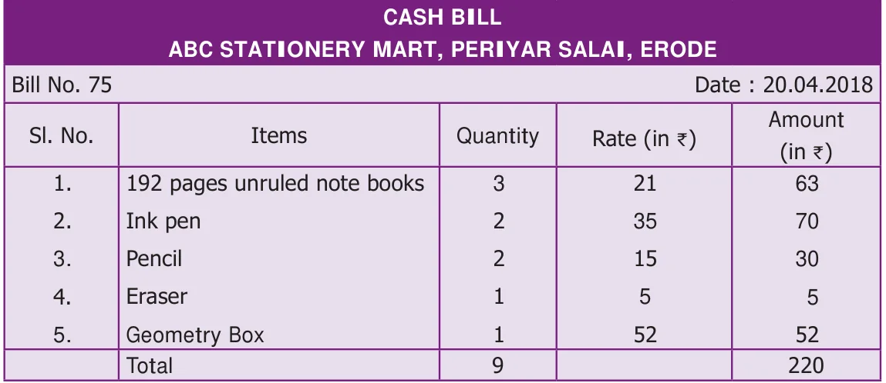
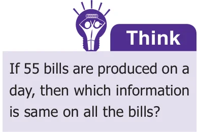
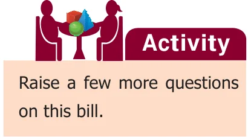
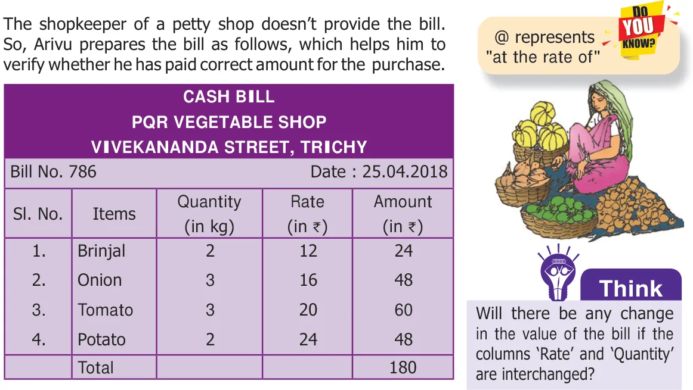
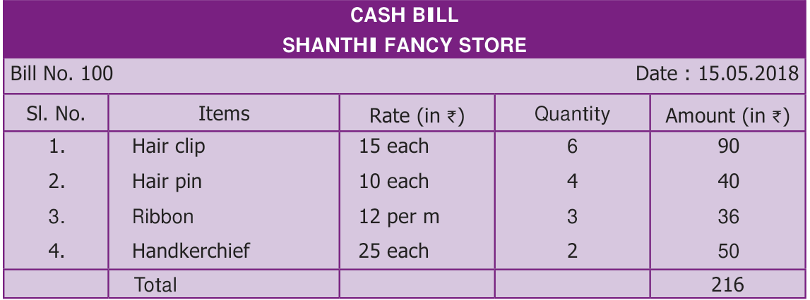
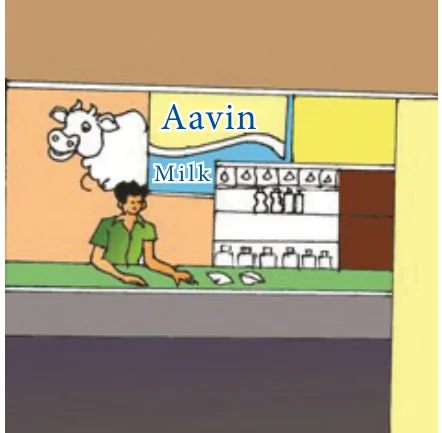
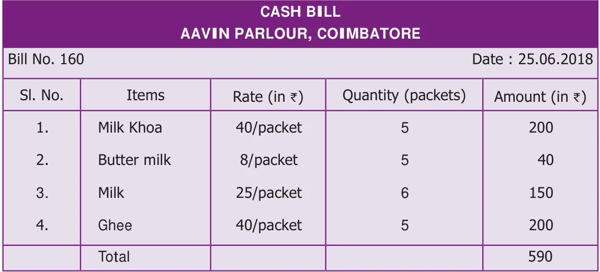

<!DOCTYPE html>
<html lang="en">
<head>
<meta charset="UTF-8">
<meta name="viewport" content="width=device-width,initial-scale=1">
<title>3.2 Bill — Bill Profit and Loss</title>
<meta name="description" content="Class 6 Mathematics · Term 2 · Bill Profit and Loss · 3.2 Bill">
<link rel="icon" href="data:image/svg+xml,<svg xmlns='http://www.w3.org/2000/svg' viewBox='0 0 100 100'><text y='.9em' font-size='90'>📘</text></svg>">
<link rel="stylesheet" href="../../../assets/book.css">
<link rel="stylesheet" href="https://cdn.jsdelivr.net/npm/katex@0.16.11/dist/katex.min.css" crossorigin="anonymous">
</head>
<body>
<header class="topbar">
<div class="topbar-in">
  <div class="crumb">
    <span class="c1"><a href="../../../index.html">Library</a> · <a href="../../index.html">Class 6 Mathematics · Term 2</a></span>
    <span class="c2">Bill Profit and Loss · 3.2 Bill</span>
  </div>
  <a class="tb-btn" data-nav="prev" href="../../03-bill-profit-and-loss/01-introduction-3.1/index.html" title="3.1 Introduction">←</a>
  <details class="drawer"><summary class="tb-btn" title="Sections in this chapter">☰</summary>
<div class="drawer-panel"><div class="dh">Bill Profit and Loss</div><a href="../01-introduction-3.1/index.html">3.1 Introduction</a><a href="../02-bill-3.2/index.html" aria-current="page">3.2 Bill</a><a href="../03-profit-and-loss-3.3/index.html">3.3 Profit and Loss</a><a href="../04-exercise-3.1/index.html">Exercise 3.1</a><a href="../05-exercise-3.2/index.html">Exercise 3.2; Miscellaneous Practice Problems</a><a href="../06-summary/index.html">Summary</a></div></details>
  <a class="tb-btn" data-nav="next" href="../../03-bill-profit-and-loss/03-profit-and-loss-3.3/index.html" title="3.3 Profit and Loss">→</a>
  <button class="tb-btn" data-theme-toggle title="Toggle light / dark" aria-label="Toggle light or dark theme">◐</button>
</div>
<div class="progress"><span style="width:53.2%"></span></div>
</header>
<main class="wrap">
<div class="sec-head">
  <p class="eyebrow"><a href="../index.html">Chapter 3 · Bill Profit and Loss</a></p>
  <h1>3.2 Bill</h1>
  <p class="sec-meta">Textbook pages 1–4 · 8 figures</p>
</div>
<article class="prose">
<h2 id="s-bill-bill-3-profit-and-lossprofit-and-loss">BILL, BILL, 3 PROFIT AND LOSSPROFIT AND LOSS</h2>
<h2 id="s-chapterchapter">CHAPTERCHAPTER</h2>
<h2 id="s-learning-objectives">Learning Objectives</h2>
<ul class="qlist">
<li><span class="mk">●</span><span class="lt">To prepare a bill and verify the bill amount.</span></li>
<li><span class="mk">●</span><span class="lt">To calculate profit and loss.</span></li>
<li><span class="mk">●</span><span class="lt">To calculate Cost Price (C.P.), Selling Price (S.P.), Marked Price (M.P.) and Discount.</span></li>
</ul>
<h2 id="s-3-1-introduction">3.1 Introduction</h2>
<p>As everyone cannot produce each and every commodity that he/she uses in the day-to-day life, one has to buy them from companies, firm, stores, shops or individuals. In all these activities, business takes place. So, business is an organised effort of individuals to produce and sell the commodities that satisfies the needs of the society. Every business involves bills, profit, loss etc. In this chapter, we are going to learn about the bills that we come across in everyday life. Also, we will learn about profit and loss in a transaction of a business.</p>
<figure class="fig table-fig wide"></figure>
<h2 id="s-bill">Bill</h2>
<p>Kothai is getting ready for Term \(- II\) studies in her school. Her mother gives Kothai `300 to purchase the stationery items like note book, pen, pencil, geometry box etc. Kothai purchased some stationery items and brought home the following bill.</p>
<figure class="fig table-fig wide"></figure>
<p>From the above bill, Kothai understands that the bill has the following details.</p>
<ul class="qlist">
<li><span class="mk">1.</span><span class="lt">Name of the shop. 5. Cost of each item.</span></li>
<li><span class="mk">2.</span><span class="lt">Serial number of the bill. 6. Total number of items purchased.</span></li>
<li><span class="mk">3.</span><span class="lt">Date on which the bill is produced. 7. Amount paid for the purchase.</span></li>
<li><span class="mk">4.</span><span class="lt">The list of items purchased. 8. Tax details. You will learn in the higher classes.</span></li>
</ul>
<p>After the purchase, she has some amount left with her. She wants to verify whether the expenses made by her are correct.</p>
<h3 id="s-3-2-1-verification-of-bill">3.2.1 Verification of Bill</h3>
<figure class="fig side-fig"></figure>
<p>Kothai verifies the above bill as follows :</p>
<div class="mathblock"><p>Item 1. \(21 \times 3 = 63\)  Item 2. \(35 \times 2 = 70\)  Item 3. \(15 \times 2 = 30\)  Item 4. \(5 \times 1 = 5\)  Item 5. \(52 \times 1\)  \(\frac{= 52}{220}\) </p></div>
<figure class="fig side-fig"></figure>
<p>Kothai’s father asks some questions about the bill and Kothai answers him as follows.</p>
<ul class="qlist">
<li><span class="mk">(i)</span><span class="lt">How many notebooks are purchased ? 3</span></li>
<li><span class="mk">(ii)</span><span class="lt">What is the cost of each pen ? `35</span></li>
<li><span class="mk">(iii)</span><span class="lt">What is the amount paid for pencils ? `30</span></li>
<li><span class="mk">(iv)</span><span class="lt">How much the shopkeeper will give you back if you give 3 currencies of `100 ? `80</span></li>
</ul>
<h3 id="s-3-2-2-preparation-of-a-bill">3.2.2 Preparation of a Bill</h3>
<p>Arivu purchased the following vegetables from a petty shop. 2 kg of Brinjal @ `12 per kg, 3 kg of Onion @ `16 per kg, 3 kg of Tomato @ `20 per kg and 2 kg of Potato @ `24 per kg.</p>
<aside class="sidenote"><p>BILL, PROFIT AND LOSS</p></aside>
<figure class="fig table-fig wide"></figure>
<p>Example 1: Ramya purchases some make-up items and gets the following bill.</p>
<figure class="fig table-fig wide"></figure>
<p>Observe the bill and answer the following questions.</p>
<ul class="qlist">
<li><span class="mk">(i)</span><span class="lt">What is the bill number? Note</span></li>
<li><span class="mk">(ii)</span><span class="lt">Mention the date of the bill. Most of the bills will have GST in</span></li>
<li><span class="mk">(iii)</span><span class="lt">How many different items were purchased? them. GST stands for Goods and</span></li>
<li><span class="mk">(iv)</span><span class="lt">What is the cost of a hair clip? Services Tax, which is a single indirect</span></li>
<li><span class="mk">(v)</span><span class="lt">What is the total cost of the ribbon? tax in India which has been recently</span></li>
<li><span class="mk">(i)</span><span class="lt">Solution :The bill number is 100. introduced to replace all other taxes</span></li>
<li><span class="mk">(ii)</span><span class="lt">The date of the bill is 15.05.2018. like Service Tax, VAT, etc. The GST is</span></li>
<li><span class="mk">(iii)</span><span class="lt">There were four different items purchased. imposed at various rates on various</span></li>
<li><span class="mk">(iv)</span><span class="lt">The cost of 1 hair clip is `15. items. The GST is of two types. They</span></li>
<li><span class="mk">(v)</span><span class="lt">The total cost for the ribbon is `36. are Central GST (CGST) and State</span></li>
</ul>
<aside class="sidenote"><p>GST (SGST).</p></aside>
<p>Example 2: Prepare a bill for the following purchases at Aavin sales counter in Coimbatore on 25-06-2018 bearing the Bill number 160.</p>
<ul class="qlist">
<li><span class="mk">1.</span><span class="lt">5 packets Milk Khoa of 100 gm @ `40 each</span></li>
</ul>
<figure class="fig side-fig"></figure>
<ul class="qlist">
<li><span class="mk">2.</span><span class="lt">5 packets of Butter Milk @ `8 each</span></li>
<li><span class="mk">3.</span><span class="lt">6 packets Milk of 500ml @ `25 each</span></li>
<li><span class="mk">4.</span><span class="lt">5 packets Ghee of 100gm @ `40 each</span></li>
</ul>
<h4 class="callout-h" id="s-solution">Solution :</h4>
<ul class="qlist">
<li><span class="mk">1.</span><span class="lt">Milk Khoa  \(5 \times\) `40 = `200</span></li>
<li><span class="mk">2.</span><span class="lt">Butter Milk  \(5 \times\) ` \(8 =\) ` 40</span></li>
<li><span class="mk">3.</span><span class="lt">Milk  \(6 \times\) `25 = `150</span></li>
<li><span class="mk">4.</span><span class="lt">Ghee  \(5 \times\) `40 =</span></li>
</ul>
<div class="mathblock"><p>Total \(\frac{`200}{590}\) `</p></div>
<figure class="fig table-fig wide"></figure>
</article>
<nav class="pager"><a class="" data-nav="prev" href="../../03-bill-profit-and-loss/01-introduction-3.1/index.html"><span class="dir">← Previous</span><span class="t">3.1 Introduction</span><span class="ch">Bill Profit and Loss</span></a><a class="nx" data-nav="next" href="../../03-bill-profit-and-loss/03-profit-and-loss-3.3/index.html"><span class="dir">Next →</span><span class="t">3.3 Profit and Loss</span><span class="ch">Bill Profit and Loss</span></a></nav>
</main><footer class="site">Generated from the source textbook PDFs · text, figures and exercises belong to their respective publishers.</footer><script defer src="https://cdn.jsdelivr.net/npm/katex@0.16.11/dist/katex.min.js" crossorigin="anonymous"></script>
<script defer src="https://cdn.jsdelivr.net/npm/katex@0.16.11/dist/contrib/auto-render.min.js" crossorigin="anonymous"
  onload="renderMathInElement(document.body,{delimiters:[
    {left:'\\(',right:'\\)',display:false},
    {left:'$$',right:'$$',display:true},
    {left:'\\[',right:'\\]',display:true}],throwOnError:false,ignoredTags:['script','noscript','style','textarea','pre','code']})"></script>
<script src="../../../assets/book.js"></script>
<script defer src="../../../../assets/search.js"></script>
</body>
</html>
